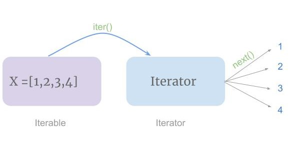
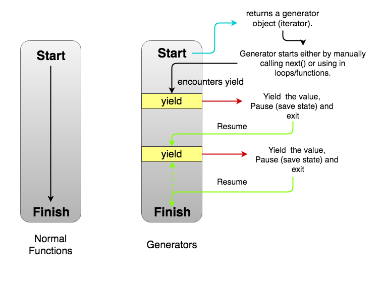

Keyboard shortcuts:
N/СпейсNext Slide
PPrevious Slide
OSlides Overview
ctrl+left clickZoom Element
If you want print version => add '
?print-pdf' at the end of slides URL (remove '#' fragment) and then print.
Like: https://progressbg-python-course.github.io/...CourseIntro.html?print-pdf
Iterators and Generators in Python
Created for
Iva E. Popova, 2016-2025,

Introduction
Introduction
- Iterators and generators are powerful features in Python that enable efficient data processing, memory optimization, and elegant code design. They are fundamental to Python's "lazy evaluation" approach, where values are computed only when needed, allowing for working with large or even infinite sequences without consuming excessive memory.
- Characteristics
- Efficiency: Unlike loading the entire buffet onto your plate (list) at once, iterators fetch each dish (element) as needed. This is particularly useful for large datasets, where loading everything upfront could be slow and resource-intensive.
- Memory Conservation: Just like you don't need to carry all the food at once, iterators don't hold the entire collection in memory. They only remember the current dish (element) and where to find the next one, saving valuable memory for other tasks.
- Lazy Evaluation: Think of a buffet where dishes are prepared only when you ask for them. Iterators are similar – they only generate elements when you request them, making them ideal for infinite or very large sequences where you might not need everything.
Iterators
Iterators
What Are Iterators?
- An iterator is an object that knows how to return items from a collection, one at a time, while keeping track of its current position within that collection.
- It must implements next method:
__next__(): returns the next item of the sequence. On reaching the end, it should raise the StopIteration exception.__iter__(): returns the iterator object itself.
Iterables vs. Iterators
- Iterables are objects that can be iterated over, like lists, tuples, and strings. They implement the __iter__() method that returns an iterator.
- Iterators are objects that keep track of state during iteration. They know what data has been processed and what data comes next.
- Iterables are used directly with
forloops. Iterators are what Python uses under the hood to loop over these iterables.
{kind=link}

Creating a Custom Iterator
- Creating a custom iterator in Python involves defining a class that implements both the __iter__() and __next__() methods
- Steps to create a custom iterator:
- Implement the
__iter__()method, which returns the iterator object (usually, it's just self). - Implement the
__next__()method, which returns the next item in the sequence. When there are no more items to return, raise the StopIteration exception. - Example: an iterator that generates a sequence of consecutive integers
class NumberIterator:
def __init__(self, start, end):
self.current = start # Start value of the iterator
self.end = end # End value for the iterator
def __iter__(self):
# The iterator object is returned here
return self
def __next__(self):
# Check if the current value has reached or exceeded the end value
if self.current >= self.end:
raise StopIteration
self.current += 1
# Return the current value before incrementing
return self.current - 1
# Use the iterator in a loop
for num in NumberIterator(1, 5):
print(num)
Built in functions iter() and next()
- iter(): A built-in function that returns an iterator from an iterable object. It calls the object's
__iter__()method that returns the iterator. - next(): A built-in function that retrieves the next item from an iterator. It calls the iterator's
__next__()method. - Example:
# An iterable object (a list)
my_list = [1, 2, 3]
# Get an iterator using iter()
iterator = iter(my_list)
# Use next() to get the next item from the iterator
print(next(iterator)) # 1
print(next(iterator)) # 2
print(next(iterator)) # 3
# If we call next() again, it will raise StopIteration
# print(next(iterator)) # Uncommenting this will raise StopIteration
Example: Custom Iterator on Fibonacci Sequence
- The Fibonacci sequence is a series of numbers where each number is the sum of the two preceding ones. It typically starts with 0 and 1.
- For example, the first ten Fibonacci numbers are: 0, 1, 1, 2, 3, 5, 8, 13, 21, 34
- Reference: Fibonacci Sequence @wikipedia
class FibonacciIterator:
def __init__(self, n):
self.a, self.b = 0, 1 # Starting values for Fibonacci sequence
self.n = n # Number of Fibonacci numbers to generate
self.count = 0 # Counter to keep track of how many numbers have been generated
def __iter__(self):
return self
def __next__(self):
if self.count >= self.n:
raise StopIteration # Stop when we've generated n numbers
self.a, self.b = self.b, self.a + self.b # Update Fibonacci numbers
self.count += 1 # Inrement count
return self.a
# Example usage: create Fibonacci iterator for first 10 numbers
fibonacci = FibonacciIterator(10)
for number in fibonacci:
print(number, end=",")
Generators
Generators
Overview
- Generators are a simple and powerful tool for creating iterators.
- They provide a concise way to implement iterators without the boilerplate code of the iterator protocol.
def number_generator(start, end):
current = start
while current < end:
yield current
current += 1
# Use the generator in a loop
for num in number_generator(1, 5):
print(num)
Create Generator function
- Creating generator is like creating a normal function, but using
yieldinstead ofreturn - When the generator function is called, it returns a generator object.
def foo_generator():
print('generator start')
# yield is almost like return, but it freezes the execution
yield 1
yield 2
print('generator end')
foo_gen = foo_generator()
for x in foo_gen:
print(x)
# generator start
# 1
# 2
# generator end
How a generator function works?
- When a generator function is called, it doesn't execute the function body immediately. Instead:
- It returns a generator object
- Each time next() is called on the generator, the function executes until the next yield statement
- The yielded value is returned by next()
- The function's state is saved for the next call
- When the function exits, StopIteration is raised
def simple_generator():
print("Start")
yield 1
print("Resume")
yield 2
print("Resume")
yield 3
print("Done")
gen = simple_generator()
print(next(gen)) # Start -> Yields 1
print(next(gen)) # Resumes -> Yields 2
print(next(gen)) # Resumes -> Yields 3
print(next(gen)) # Raises StopIteration
How a generator function works?
{kind=link}

Example: generator for sequence of consecutive integers
def number_generator(start, end):
current = start
while current < end:
yield current
current += 1
for num in number_generator(1, 5):
print(num, end=",")
Example: generator for Fibonacci_numbers
def fibonacci_generator(n):
a = 0
b = 1
for _ in range(n):
yield a
a, b = b, a + b
for number in fibonacci_generator(10):
print(number, end="")
Example - nested list flatten generator
def flatten(nested):
"""Flattens a nested list into a single generator of elements."""
for sublist in nested:
for element in sublist:
yield element
nested = [[1, 2], [3, 4], [5]]
print( list(flatten(nested)) )
# [1, 2, 3, 4, 5]
Generator comprehensions
Generator comprehensions
- Generator comprehensions in Python are a concise way to create generators.
- Basic syntax:
- Example: generator that yields squares of numbers from 1 to 10
- Example: generator that yields squares of even numbers from 1 to 10
(variable for variable in iterable if condition)
squares = (num**2 for num in range(1,11))
print(squares)
print(list(squares))
# <generator object <genexpr> at 0x7f87ade4dd80>
# [1, 4, 9, 16, 25, 36, 49, 64, 81, 100]
squares = (num**2 for num in range(1,11) if num%2==0)
print(list(squares))
# [4, 16, 36, 64, 100]
Example: Process large log file with generator
- Consider a scenario where you need to process a log file and find only those lines that contain the substring 'error'.
- Sample code without using a generator expression:
- Loading the entire file into memory as a list of lines is inefficient and may exceed system memory, especially for large log files (several GBs). Instead, a generator processes one line at a time, reducing memory usage.
error_lines = [] # Create a list to store error lines
with open('./syslog') as file:
for line in file:
if 'error' in line:
error_lines.append(line) # Add matching lines to the list
for line in error_lines:
print(line)
error_lines = (line for line in open('./syslog') if 'error' in line)
for line in error_lines:
print(line)
Use Cases
- Handling Large Data Sets: Generators are memory-efficient because they yield items one at a time, only generating a value when requested. This makes them particularly useful for processing large data sets where loading the entire data set into memory (e.g., as a list) would be impractical or impossible due to memory constraints.
- Data Streaming and Pipelines: Generators can be used to create data pipelines, where you have a series of operations that process data. Each step can be a generator that takes data from the previous step, processes it, and yields the result. This lazy evaluation means that data is processed in a streaming fashion, which can be efficient for tasks like reading and processing files line by line, or processing data coming in from a network.
- Improving Performance in Loops: In scenarios where a loop is used to process elements one at a time, using a generator can improve performance by reducing the initial overhead of generating and storing all elements. This is particularly noticeable with operations that may not require all the elements of a sequence or when the operation can terminate early.
- Composition and Chaining: Generators can be easily composed or chained together, allowing for the construction of complex data processing chains that are evaluated lazily. This is useful in functional programming patterns within Python, where you might filter, map, and reduce data in a series of steps.
Generator comprehensions examples:
Generator comprehensions examples:
Process large log file
- Consider a scenario where you need to process a log file that is several gigabytes in size. Loading the entire file into memory as a list of lines would be inefficient and might even exceed your system's memory capacity. Instead, you can use a generator to process one line at a time.
- You can use next generator expression that efficiently iterates over each line in a file named ./syslog, yielding only those lines that contain the substring 'error'
error_lines = (line for line in open('./syslog') if 'error' in line)
for line in error_lines:
print(line)
Data Streaming and Pipelines
- Data streaming and pipelines refer to the process of sequentially passing data through a series of steps (or stages), where each step processes the data in some way and passes it on to the next step. This approach is particularly useful for processing large datasets or streams of data in a memory-efficient manner. Python's generator functions and expressions are ideal for constructing such pipelines due to their lazy evaluation, which allows them to process one item at a time.
filename = 'example.txt'
# Pipeline Construction
# Step 1: Read Lines
lines = (line for line in open(filename))
# Step 2: Normalize Text
normalized_lines = (line.lower().strip() for line in lines)
# Step 3: Filter Out Comments
non_comment_lines = (line for line in normalized_lines if not line.startswith('#'))
# Execute the pipeline
for line in non_comment_lines:
print(line)
Composition and Chaining
- Imagine we have a list of sales records where each record is a dictionary containing the sales amount and the region. Our goal is to:
- Filter records to include only sales from a specific region (e.g., "Europe").
- Convert each record into just the sales amount (mapping).
- Calculate the total sales amount for the filtered records.
sales_data = [
{'amount': 1000, 'region': 'Europe'},
{'amount': 1500, 'region': 'North America'},
{'amount': 800, 'region': 'Europe'},
{'amount': 1200, 'region': 'Asia'},
{'amount': 3000, 'region': 'Europe'},
{'amount': 700, 'region': 'North America'},
]
# Variant 1: with generators
europe_sales_amounts = (
# map
sale['amount'] for sale in (
# filter:
sale for sale in sales_data if sale['region']=='Europe'
)
)
total_sales_amount = sum(europe_sales_amounts)
print(total_sales_amount)
Homework
Homework
- The tasks are given in next gist file
- You can copy it and work directly on it. Just put your code under "### Your code here".
These slides are based on
customised version of
framework